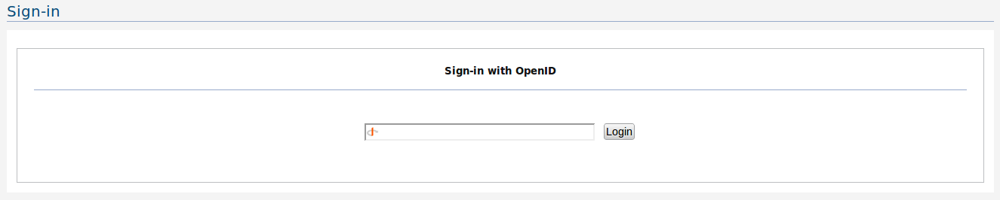

OpenID Sign-in component enables you to sign in with following options

Figure 1: OpenID Sign-in
If you have a third party OpenID - you may use it to sign in from here - which will prompt you to associate it with either an existing user account or sign up as new - if the OpenID is not yet registered.